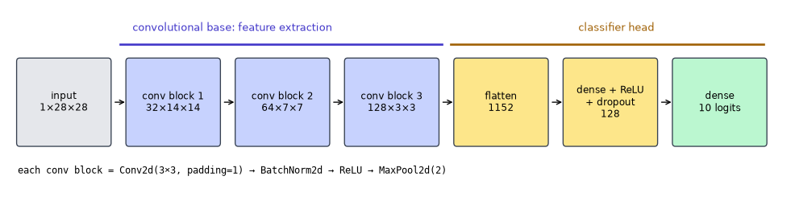
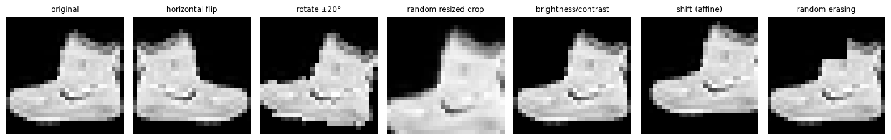
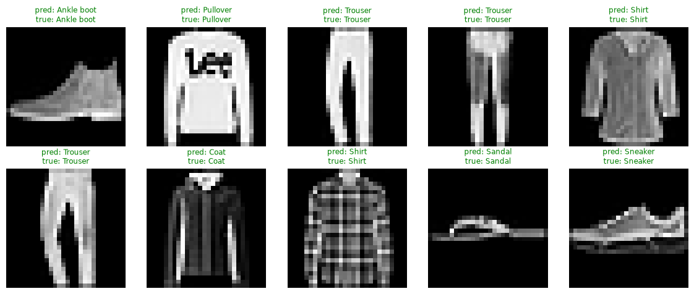
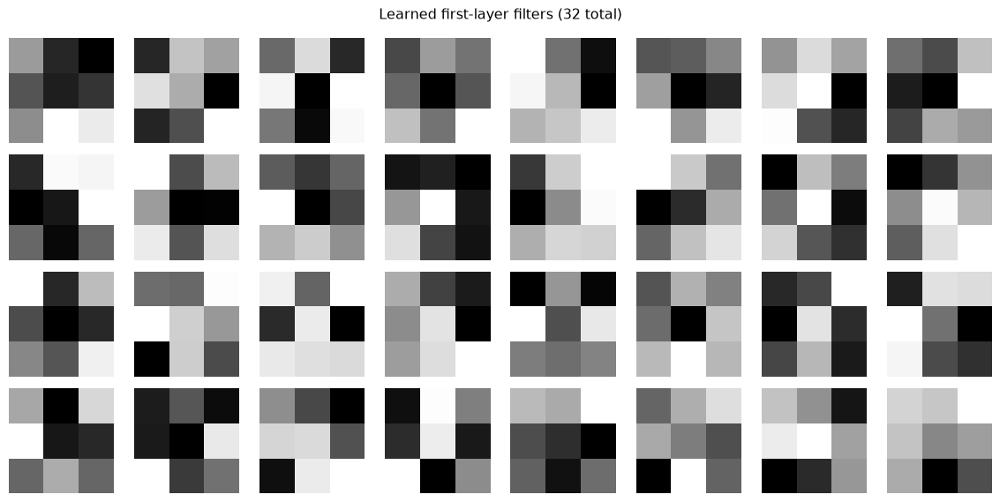
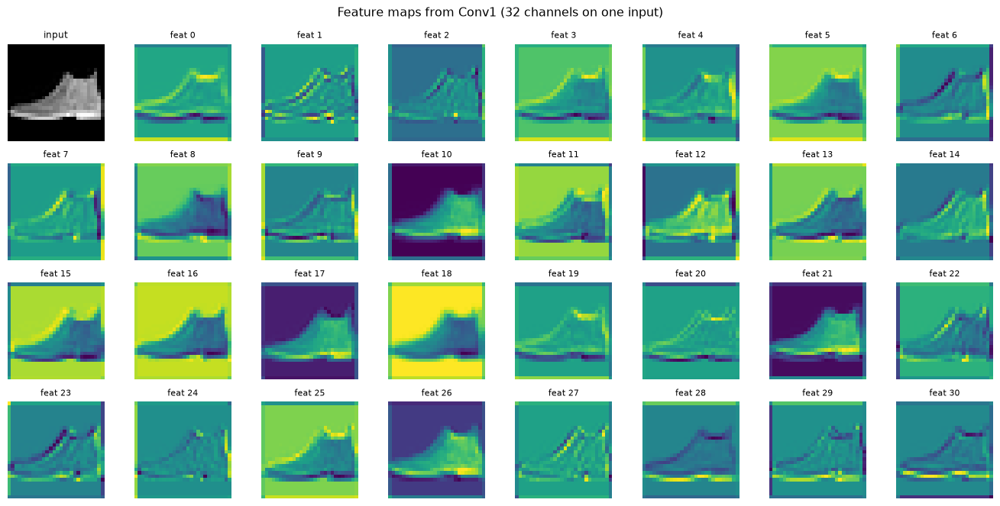

Assembling and Training a CNN
Everything comes together. The typical architecture pattern, data augmentation, and a complete CNN trained on Fashion-MNIST on this computer's GPU, with the shape of the data written down at every layer, the predictions, and what the trained filters and feature maps look like.
01 The typical CNN pattern

Python code for this figure
import matplotlib.pyplot as plt
from matplotlib.patches import FancyBboxPatch
blocks = [("input\n1×28×28", "#e5e7eb"), ("conv block 1\n32×14×14", "#c7d2fe"), ("conv block 2\n64×7×7", "#c7d2fe"), ("conv block 3\n128×3×3", "#c7d2fe"),
("flatten\n1152", "#fde68a"), ("dense + ReLU\n+ dropout\n128", "#fde68a"), ("dense\n10 logits", "#bbf7d0")]
fig, ax = plt.subplots(figsize=(13, 3.2))
for i, (txt, c) in enumerate(blocks):
ax.add_patch(FancyBboxPatch((i * 1.85, 0), 1.5, 1.2, boxstyle="round,pad=0.05", fc=c, ec="#374151"))
ax.text(i * 1.85 + 0.75, 0.6, txt, ha="center", va="center", fontsize=9)
if i < len(blocks) - 1:
ax.annotate("", (i * 1.85 + 1.82, 0.6), (i * 1.85 + 1.58, 0.6), arrowprops=dict(arrowstyle="->"))
ax.text(3.6, 1.65, "convolutional base: feature extraction", ha="center", fontsize=10, color="#4338ca")
ax.plot([1.7, 7.15], [1.45, 1.45], color="#4338ca", lw=2)
ax.text(10.1, 1.65, "classifier head", ha="center", fontsize=10, color="#a16207")
ax.plot([7.3, 12.6], [1.45, 1.45], color="#a16207", lw=2)
ax.text(3.6, -0.45, "each conv block = Conv2d(3×3, padding=1) → BatchNorm2d → ReLU → MaxPool2d(2)", ha="center", fontsize=9, family="monospace")
ax.set_xlim(-0.2, 13); ax.set_ylim(-0.8, 2.0); ax.axis("off"); plt.show()Two halves of a CNN
- Convolutional base (feature extractor): repeated blocks of
Conv → BN → ReLU → Pool. Spatial dimensions shrink; channel depth grows. The output is a stack of learned feature maps. - Classifier head:
Flatten → Dense → Dropout → Dense. Takes the final feature maps and maps them to one score (logit) per class. The softmax is left tonn.CrossEntropyLoss(note 12), and toargmaxat prediction time.
The canonical block
The repeated unit of a modern CNN:
Conv2d(c_in, c_out, kernel_size=3, padding=1) BatchNorm2d(c_out) ReLU() # maybe: Dropout2d(p=0.1) # then: MaxPool2d(2) # or stride-2 conv instead
Four to six of these blocks is typical. Each roughly doubles channel depth and halves spatial dimensions.
The 60-second architecture recipe
For a modest classification task like Fashion-MNIST:
- Start with 32 filters. Double every block.
- Use 3×3 conv,
padding=1, stride 1. - BatchNorm after every conv.
- MaxPool 2×2 after every 1-2 convs.
- End with global average pool or flatten → dense(128) → dropout → dense(num_classes).
That recipe gets you to ~90% on Fashion-MNIST without any tuning.
02 Data augmentation for images
Why augment
- Prevent overfitting — CNNs can memorise small datasets; augmentation forces generalisation.
- Teach invariance — a cat is still a cat if flipped, rotated, or shifted. Augmentation bakes that in.
- Combat data scarcity — labelled data is expensive; augmentation multiplies it for free.
Common techniques

Python code for this figure
import torch
import matplotlib.pyplot as plt
from torchvision import datasets, transforms
img, label = datasets.FashionMNIST(root="data", train=True, download=False)[0]
augs = {"horizontal flip": transforms.RandomHorizontalFlip(p=1.0), "rotate ±20°": transforms.RandomRotation(20),
"random resized crop": transforms.RandomResizedCrop(28, scale=(0.6, 1.0)), "brightness/contrast": transforms.ColorJitter(0.5, 0.5),
"shift (affine)": transforms.RandomAffine(0, translate=(0.15, 0.15)),
"random erasing": transforms.Compose([transforms.ToTensor(), transforms.RandomErasing(p=1.0, scale=(0.05, 0.15)), transforms.ToPILImage()])}
torch.manual_seed(1)
fig, axes = plt.subplots(1, 7, figsize=(15, 2.6))
axes[0].imshow(img, cmap="gray"); axes[0].set_title("original", fontsize=9)
for ax, (name, tf) in zip(axes[1:], augs.items()):
ax.imshow(tf(img), cmap="gray"); ax.set_title(name, fontsize=9)
for ax in axes: ax.axis("off")
plt.tight_layout(); plt.show()| Technique | What it does |
|---|---|
| Random horizontal flip | Mirror left/right. Safe for most natural images |
| Random rotation | Rotate by a few degrees. Teaches rotational robustness |
| Random crop + resize | Crop a region, resize. The ImageNet workhorse |
| Colour jitter | Adjust brightness, contrast, saturation |
| Random erasing / Cutout | Blank out a random rectangle. Forces the model to use the whole image |
The one rule
Only augment the training set. Validation and test must be unmodified so your metric reflects true inference-time behaviour.
In PyTorch, augmentations are torchvision.transforms applied when each image is loaded, so every epoch draws new random variants; the training cell below uses RandomHorizontalFlip.
03 The Fashion-MNIST task
The dataset
- 60,000 training + 10,000 test images.
- Grayscale, 28×28 pixels.
- 10 classes: T-shirt/top, Trouser, Pullover, Dress, Coat, Sandal, Shirt, Sneaker, Bag, Ankle boot.
A drop-in replacement for MNIST (same size and format) that is much harder: on MNIST digits even a small CNN reaches 99%+, which no longer tells models apart. On Fashion-MNIST the best models reach about 96%, and a basic CNN reaches about 90% within a few epochs.
The architecture used below
Input (1, 28, 28) → Conv(32) → ReLU → MaxPool → (32, 14, 14) → Conv(64) → ReLU → MaxPool → (64, 7, 7) → Conv(128) → ReLU → MaxPool → (128, 3, 3) → Flatten → (1152,) → Dense(128) → ReLU → Dropout → (128,) → Dense(10) → (10,) (logits)
Three conv blocks + two dense layers. Modest, trainable in minutes.
04 CNN data flow and feature hierarchy
Shape bookkeeping
The single most useful habit in CNN development: write down the output shape after every layer.
| Layer | Operation | Output |
|---|---|---|
| Input | raw image | (1, 28, 28) |
| Conv1 + Pool1 | 32 filters, 2×2 pool | (32, 14, 14) |
| Conv2 + Pool2 | 64 filters, 2×2 pool | (64, 7, 7) |
| Conv3 + Pool3 | 128 filters, 2×2 pool | (128, 3, 3) |
| Flatten | reshape | (1152,) |
| FC + Dropout | dense 1152 → 128 | (128,) |
| Output | dense 128 → 10 | (10,) |
Keep this table next to the code. When something breaks, it's almost always because this table says one thing and your nn.Linear(in_features=…) says another.
Hierarchical feature learning
The feature-level progression that emerges through training:
- Early layers (Conv1) — oriented edges, colour patches.
- Middle layers (Conv2) — textures, simple shapes.
- Deep layers (Conv3) — object parts (collar, sleeve, lace).
- FC layers — combines parts for the final classification.
Nobody designs this hierarchy. It falls out of training a CNN with gradient descent on labelled images.
05 Training process and results
Standard training setup
- Dataset: Fashion-MNIST, 60k train / 10k test.
- Preprocessing: normalise pixels to [0, 1] (then optionally mean-subtract).
- Batch size: 64 (power of 2, fits comfortably in memory).
- Epochs: 5 for a demo. 20-30 for real training.
- Optimiser: Adam, learning rate 1e-3.
- Loss: CrossEntropyLoss (combines log-softmax + NLL).
Expected outcomes
- Total params: about 240k (the cell below prints the exact number), most of them in the first dense layer (1152 × 128). The three conv layers together need under 100k.
- Training accuracy: improves each epoch to 90-95%.
- Test accuracy: 85-90% in 5 epochs. 92-94% with more epochs, augmentation, and tuning.
If training doesn't work
Common failure modes to check:
- Loss not decreasing → Learning rate too high (loss explodes) or too low (nothing moves).
- Train accuracy high, test accuracy low → Overfitting. Add augmentation, dropout, or regularisation.
- Both low → Model too small, or input preprocessing wrong, or the task genuinely needs more capacity.
- Loss is NaN → Learning rate too high, bad initialisation, or input not normalised.
06 Runnable demo — train a CNN end-to-end
import torch
import torch.nn as nn
import torch.nn.functional as F
from torch.utils.data import DataLoader
import torchvision
from torchvision import datasets, transforms
device = torch.device('cuda' if torch.cuda.is_available() else 'cpu')
print(f"device: {device}")
# Transforms: convert to tensor (puts pixels in [0,1]) and normalise
train_tfm = transforms.Compose([
transforms.RandomHorizontalFlip(),
transforms.ToTensor(),
transforms.Normalize((0.5,), (0.5,)),
])
test_tfm = transforms.Compose([
transforms.ToTensor(),
transforms.Normalize((0.5,), (0.5,)),
])
# Fashion-MNIST
# workspace/data/FashionMNIST (copied there by tools/setup_data.py): nothing is downloaded
train_ds = datasets.FashionMNIST('data', train=True, download=False, transform=train_tfm)
test_ds = datasets.FashionMNIST('data', train=False, download=False, transform=test_tfm)
train_loader = DataLoader(train_ds, batch_size=64, shuffle=True)
test_loader = DataLoader(test_ds, batch_size=256, shuffle=False)
classes = ['T-shirt/top','Trouser','Pullover','Dress','Coat',
'Sandal','Shirt','Sneaker','Bag','Ankle boot']
print(f"train: {len(train_ds)}, test: {len(test_ds)}, classes: {len(classes)}")device: cuda train: 60000, test: 10000, classes: 10
Define the CNN
class SimpleCNN(nn.Module):
def __init__(self, num_classes=10):
super().__init__()
self.features = nn.Sequential(
nn.Conv2d(1, 32, 3, padding=1), # (1,28,28) -> (32,28,28)
nn.BatchNorm2d(32), nn.ReLU(),
nn.MaxPool2d(2), # -> (32,14,14)
nn.Conv2d(32, 64, 3, padding=1), # -> (64,14,14)
nn.BatchNorm2d(64), nn.ReLU(),
nn.MaxPool2d(2), # -> (64, 7, 7)
nn.Conv2d(64, 128, 3, padding=1), # -> (128,7,7)
nn.BatchNorm2d(128), nn.ReLU(),
nn.MaxPool2d(2), # -> (128,3,3)
)
self.classifier = nn.Sequential(
nn.Flatten(),
nn.Linear(128*3*3, 128),
nn.ReLU(),
nn.Dropout(0.5),
nn.Linear(128, num_classes),
)
def forward(self, x):
return self.classifier(self.features(x))
model = SimpleCNN().to(device)
print(model)
print(f"\nparameters: {sum(p.numel() for p in model.parameters()):,}")SimpleCNN(
(features): Sequential(
(0): Conv2d(1, 32, kernel_size=(3, 3), stride=(1, 1), padding=(1, 1))
(1): BatchNorm2d(32, eps=1e-05, momentum=0.1, affine=True, track_running_stats=True)
(2): ReLU()
(3): MaxPool2d(kernel_size=2, stride=2, padding=0, dilation=1, ceil_mode=False)
(4): Conv2d(32, 64, kernel_size=(3, 3), stride=(1, 1), padding=(1, 1))
(5): BatchNorm2d(64, eps=1e-05, momentum=0.1, affine=True, track_running_stats=True)
(6): ReLU()
(7): MaxPool2d(kernel_size=2, stride=2, padding=0, dilation=1, ceil_mode=False)
(8): Conv2d(64, 128, kernel_size=(3, 3), stride=(1, 1), padding=(1, 1))
(9): BatchNorm2d(128, eps=1e-05, momentum=0.1, affine=True, track_running_stats=True)
(10): ReLU()
(11): MaxPool2d(kernel_size=2, stride=2, padding=0, dilation=1, ceil_mode=False)
)
(classifier): Sequential(
(0): Flatten(start_dim=1, end_dim=-1)
(1): Linear(in_features=1152, out_features=128, bias=True)
(2): ReLU()
(3): Dropout(p=0.5, inplace=False)
(4): Linear(in_features=128, out_features=10, bias=True)
)
)
parameters: 241,994Training loop
optim = torch.optim.Adam(model.parameters(), lr=1e-3)
loss_fn = nn.CrossEntropyLoss()
def train_one_epoch():
model.train()
total, correct, running_loss = 0, 0, 0.0
for x, y in train_loader:
x, y = x.to(device), y.to(device)
logits = model(x)
loss = loss_fn(logits, y)
optim.zero_grad(); loss.backward(); optim.step()
running_loss += loss.item() * x.size(0)
correct += (logits.argmax(1) == y).sum().item()
total += x.size(0)
return running_loss / total, correct / total
def evaluate():
model.eval()
total, correct = 0, 0
with torch.no_grad():
for x, y in test_loader:
x, y = x.to(device), y.to(device)
logits = model(x)
correct += (logits.argmax(1) == y).sum().item()
total += x.size(0)
return correct / total
EPOCHS = 3 # keep small for a demo; try 10+ for real
for epoch in range(1, EPOCHS + 1):
tr_loss, tr_acc = train_one_epoch()
te_acc = evaluate()
print(f"epoch {epoch}: train loss={tr_loss:.4f} train acc={tr_acc:.4f} test acc={te_acc:.4f}")epoch 1: train loss=0.4956 train acc=0.8253 test acc=0.8693 epoch 2: train loss=0.3306 train acc=0.8824 test acc=0.9011 epoch 3: train loss=0.2878 train acc=0.8979 test acc=0.9031
Prediction demo
import matplotlib.pyplot as plt
model.eval()
x, y = next(iter(test_loader))
x_dev, y_dev = x.to(device), y.to(device)
with torch.inference_mode():
preds = model(x_dev).argmax(1).cpu()
fig, axes = plt.subplots(2, 5, figsize=(12, 5))
for i, ax in enumerate(axes.flat):
img = x[i, 0].numpy() * 0.5 + 0.5
color = 'green' if preds[i] == y[i] else 'red'
ax.imshow(img, cmap='gray')
ax.set_title(f'pred: {classes[preds[i]]}\ntrue: {classes[y[i]]}', color=color, fontsize=9)
ax.axis('off')
plt.tight_layout(); plt.show()
07 Visualising filters and feature maps
First-layer filters
Looking at the learned 3×3 kernels of the first conv layer. For a trained CNN, these converge to edge- and blob-detectors.
# Grab Conv1 filters: shape (32, 1, 3, 3)
w = model.features[0].weight.detach().cpu()
print(f"Conv1 weight shape: {tuple(w.shape)}")
# Normalise each filter to [0, 1] for visualisation
def norm(x):
x = x - x.min()
return x / (x.max() + 1e-8)
fig, axes = plt.subplots(4, 8, figsize=(12, 6))
for i, ax in enumerate(axes.flat):
ax.imshow(norm(w[i, 0]), cmap='gray')
ax.axis('off')
plt.suptitle('Learned first-layer filters (32 total)')
plt.tight_layout(); plt.show()Conv1 weight shape: (32, 1, 3, 3)

Feature maps on one image
# Hook the activations of the first conv block
feature_map = None
def hook(module, input, output):
global feature_map
feature_map = output
h = model.features[0].register_forward_hook(hook)
# Push one image through
x_one = x[0:1].to(device)
_ = model(x_one)
h.remove()
fmap = feature_map.detach().cpu()[0]
print(f"feature map shape: {tuple(fmap.shape)}")
fig, axes = plt.subplots(4, 8, figsize=(14, 7))
axes[0, 0].imshow(x[0, 0] * 0.5 + 0.5, cmap='gray'); axes[0, 0].set_title('input', fontsize=9)
axes[0, 0].axis('off')
for i, ax in enumerate(axes.flat):
if i == 0: continue
if i - 1 < fmap.shape[0]:
ax.imshow(fmap[i - 1], cmap='viridis')
ax.set_title(f'feat {i-1}', fontsize=8)
ax.axis('off')
plt.suptitle('Feature maps from Conv1 (32 channels on one input)')
plt.tight_layout(); plt.show()feature map shape: (32, 28, 28)
